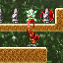

その場から動かずに、後ろを振り向くテクニックです。
一見地味ですが、これを知らないと
クリアが非常に難しくなる面があります。
４−１０、４−１２などで役に立つ…と思います。（自信なし）
|
|||
壁のほうを |
しゃがみます。 |
しゃがんだまま |
よっこいしょ。 |
特に終盤で行き詰る方が多いようなので、
マニュアルにはないテクニックを紹介します。
★★★１ 遠斬り
自キャラから、半マス離れたブロックや、
敵キャラを攻撃するテクニックです。
１−８、４−２ などで、役に立つかもしれません。

間に壁があってもＯＫ！
上もいけます！
斜め下だって楽勝。
★★★２ しゃがみ振り向き
その場から動かずに、後ろを振り向くテクニックです。
一見地味ですが、これを知らないと
クリアが非常に難しくなる面があります。
４−１０、４−１２などで役に立つ…と思います。（自信なし）
壁のほうを
向いていますね？しゃがみます。
しゃがんだまま
振り向きます。よっこいしょ。
★★★３ レーザーめり込み
レーザーには、体が半分めり込んでもミスになりません。
ちなみに、レーザー末端の炎の部分には、当たり判定がありませんので、
当たっても大丈夫です。
３−８、４−１４などで、必要になってきます。
熱いですが、大丈夫。
頭が焼けてますが…。
ひぃぃ…！
★★★４ スロー落下
落下中に剣を振ると、空中で一瞬止まれます。
剣を連打することにより、
普通に落下するよりゆっくり落下することができます。
応用で、ジャンプ上昇中に剣を振って、ゆっくり上昇もできます。
４−１４、ステージ５などで、有効なテクニックです。ちなみに画像はなし。
★★★５ division
エディットマップ製作者のMONAZEROさんが
最初に発見したテクニックです。
エディットモードで、ブロックの分割をして、
通常作れないデザインの面を作成できます。
まずマップ内に、
レーザー発射砲台を16個フルにおきます。
これ以上置こうとしても、
メッセージが表示されて置くことができません。その状態で、ブロックの上に
砲台を置こうとします。
砲台をおくことはできませんが…つながったブロックを、分断する事ができます。
送っていただいたエディットマップの中には、
このテクニックを使って作成されたマップが
いくつかあります。
マップの空いた部分の見た目まで気にして
エディットができるようになれば、
より、素晴らしいマップが出来上がることでしょう。